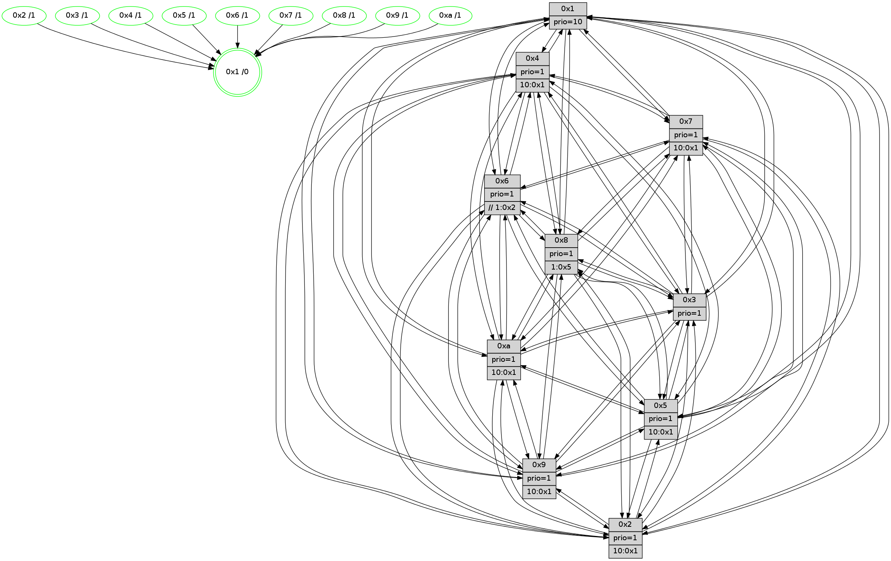

>> << IDX [start] -100 -25 -5 +0 +5 +25 [1605.06324506]
 Previous packets
----------------------------------------------------------------------
1600.334459 beacon01(faad) #0 coord=01,02,03,04,05,06,07,0a,09,08 cycle=688.0ms assoc
-- color-indic=1 64 0a bd
1600.344441 beacon02(faad) #0 coord=01,02,03,04,05,06,07,0a,09,08 cycle=688.0ms assoc 64 99 8c
1600.354441 beacon03(faad) #0 coord=01,02,03,04,05,06,07,0a,09,08 cycle=688.0ms assoc 64 e3 c1
1600.364443 beacon04(faad) #0 coord=01,02,03,04,05,06,07,0a,09,08 cycle=688.0ms assoc 64 94 2b
1600.374442 beacon05(faad) #0 coord=01,02,03,04,05,06,07,0a,09,08 cycle=688.0ms assoc 64 ee 66
1600.384443 beacon06(faad) #0 coord=01,02,03,04,05,06,07,0a,09,08 cycle=688.0ms assoc 64 60 b1
1600.394443 beacon07(faad) #0 coord=01,02,03,04,05,06,07,0a,09,08 cycle=688.0ms assoc 64 1a fc
1600.404449 beacon0a(faad) #0 coord=01,02,03,04,05,06,07,0a,09,08 cycle=688.0ms assoc 64 6b f7
1600.424448 beacon08(faad) #0 coord=01,02,03,04,05,06,07,0a,09,08 cycle=688.0ms assoc 64 9f 6d
1600.437635 [Hello(1): seq=929 sym=4,2,9,5,10,3,8,6,7 sysInfo=coloring-mode-on,ColoringModeRequestCalled stat=4:0,14,15,5/2:5,13,11,9/9:9,3,12,6/5:12,1,1,13/10:2,11,4,10/3:1,9,5,14/8:1,7,11,9/6:12,5,13,7/7:15,15,3,4]
1600.440990 [Color(8) seq=607 @0:0 prio=1 >1.@5,1.@6,1.@7,1.@9]
1600.444204 [Hello(5): seq=1020 sym=7,6,4,2,1,9,8,10,3 sysInfo=hasWarning stat=7:6,7,5,2/6:6,12,4,3/4:5,10,8,1/2:3,3,6,2/1:5,12,1,0/9:14,5,2,15/8:13,8,12,10/10:5,3,6,13/3:5,15,7,0]
1600.447210 [Hello(3): seq=1020 sym=1,7,6,2,4,8,9,10,5 sysInfo=hasWarning stat=1:15,5,11,0/7:1,7,8,1/6:3,8,2,0/2:2,1,3,0/4:13,5,7,1/8:10,15,14,10/9:8,7,15,4/10:0,15,5,8/5:1,0,10,4]
1600.452262 [Color(3) seq=649 @0:0 prio=1]
1600.453884 [Hello(6): seq=1020 sym=3,2,5,4,7,9,8,10,1 sysInfo=hasWarning stat=3:4,7,1,1/2:15,4,8,3/5:7,15,5,8/4:10,12,15,12/7:2,12,2,2/9:15,14,3,14/8:4,11,9,12/10:6,15,12,1/1:13,4,6,1]
1600.456570 [Hello(2): seq=1016 sym=4,5,7,6,3,9,8,10,1 sysInfo=hasWarning stat=4:0,2,15,1/5:11,0,0,5/7:6,11,7,4/6:10,0,2,0/3:0,6,6,0/9:10,14,11,13/8:12,13,12,1/10:8,1,11,15/1:1,1,1,0]
1600.461332 [Color(2) seq=580 @0:0 prio=1 >10.@1,1.@3,1.@4,1.@5]
1600.468330 [Color(6) seq=652 @0:0 prio=1 >>1.@2,1.@3,1.@4]
----------------------------------------------------------------------
1601.122590 beacon01(faad) #0 coord=01,02,03,04,05,06,07,0a,09,08 cycle=688.0ms assoc
-- color-indic=1 64 b6 b8
1601.132571 beacon02(faad) #0 coord=01,02,03,04,05,06,07,0a,09,08 cycle=688.0ms assoc 64 25 89
1601.142573 beacon03(faad) #0 coord=01,02,03,04,05,06,07,0a,09,08 cycle=688.0ms assoc 64 5f c4
1601.152573 beacon04(faad) #0 coord=01,02,03,04,05,06,07,0a,09,08 cycle=688.0ms assoc 64 28 2e
1601.162573 beacon05(faad) #0 coord=01,02,03,04,05,06,07,0a,09,08 cycle=688.0ms assoc 64 52 63
1601.172572 beacon06(faad) #0 coord=01,02,03,04,05,06,07,0a,09,08 cycle=688.0ms assoc 64 dc b4
1601.182575 beacon07(faad) #0 coord=01,02,03,04,05,06,07,0a,09,08 cycle=688.0ms assoc 64 a6 f9
1601.192577 beacon0a(faad) #0 coord=01,02,03,04,05,06,07,0a,09,08 cycle=688.0ms assoc 64 d7 f2
1601.212578 beacon08(faad) #0 coord=01,02,03,04,05,06,07,0a,09,08 cycle=688.0ms assoc 64 23 68
1601.224429 [Hello(8): seq=964 sym=5,2,3,7,9,6,4,10,1 sysInfo=hasWarning stat=5:8,1,10,4/2:15,12,4,0/3:14,5,8,6/7:12,6,7,1/9:8,0,12,9/6:10,4,6,4/4:1,6,2,3/10:2,0,2,7/1:14,0,9,0]
1601.227183 [Hello(4): seq=1020 sym=5,8,6,2,3,9,7,10,1 sysInfo=hasWarning stat=5:14,2,0,6/8:7,12,6,1/6:4,4,12,6/2:6,7,3,5/3:10,9,11,2/9:11,1,2,6/7:3,12,7,2/10:12,9,11,1/1:14,4,5,1]
1601.229841 [Hello(9): seq=964 sym=2,5,3,4,7,6,8,1 sysInfo=hasWarning stat=2:7,3,5,15/5:10,12,9,2/3:6,6,3,8/4:0,1,0,0/7:7,8,2,2/6:4,2,1,5/8:12,15,11,11/1:6,6,7,1]
1601.232249 [Color(4) seq=537 @0:0 prio=1 >10.@1,1.@2,1.@3,1.@5]
1601.234144 [Color(9) seq=546 @0:0 prio=1 >10.@1,1.@5,1.@6,1.@7]
1601.238437 [Color(5) seq=545 @0:0 prio=1 >10.@1,1.@6,1.@7,1.@8]
1601.240621 [Hello(10): seq=953 sym=6,2,3,8,7,5,9,4,1 sysInfo=hasWarning stat=6:15,2,1,9/2:8,7,5,4/3:14,11,12,0/8:11,9,7,8/7:5,7,2,1/5:13,0,8,5/9:2,7,1,0/4:8,8,13,5/1:10,0,6,1]
1601.243459 [Color(10) seq=597 @0:0 prio=1 >10.@1,1.@5,1.@6,1.@7]
1601.248472 [Hello(7): seq=1020 sym=2,3,5,6,8,4,9,10,1 sysInfo=hasWarning stat=2:13,1,1,8/3:15,7,6,7/5:0,14,15,7/6:9,8,0,1/8:5,0,8,3/4:1,5,6,2/9:5,3,9,5/10:5,10,1,1/1:13,9,3,0]
1601.252246 [Color(7) seq=527 @0:0 prio=1 >10.@1,1.@5,1.@6,1.@8]
1601.254982 [STC(1) #0.291 new-neigh,tree-change,inconsistent-stability,stable,to-color d=0]
1601.257232 [Color(1) seq=700 @0:0 prio=10]
----------------------------------------------------------------------
1601.910721 beacon01(faad) #0 coord=01,02,03,04,05,06,07,0a,09,08 cycle=688.0ms assoc
-- color-indic=1 64 72 b6
1601.920703 beacon02(faad) #0 coord=01,02,03,04,05,06,07,0a,09,08 cycle=688.0ms assoc 64 e1 87
1601.930703 beacon03(faad) #0 coord=01,02,03,04,05,06,07,0a,09,08 cycle=688.0ms assoc 64 9b ca
1601.940704 beacon04(faad) #0 coord=01,02,03,04,05,06,07,0a,09,08 cycle=688.0ms assoc 64 ec 20
1601.950704 beacon05(faad) #0 coord=01,02,03,04,05,06,07,0a,09,08 cycle=688.0ms assoc 64 96 6d
1601.960704 beacon06(faad) #0 coord=01,02,03,04,05,06,07,0a,09,08 cycle=688.0ms assoc 64 18 ba
1601.970705 beacon07(faad) #0 coord=01,02,03,04,05,06,07,0a,09,08 cycle=688.0ms assoc 64 62 f7
1601.980710 beacon0a(faad) #0 coord=01,02,03,04,05,06,07,0a,09,08 cycle=688.0ms assoc 64 13 fc
1602.000710 beacon08(faad) #0 coord=01,02,03,04,05,06,07,0a,09,08 cycle=688.0ms assoc 64 e7 66
1602.012019 [STC(10)->1 #0.291 new-neigh,tree-change,inconsistent-stability,stable,to-color d=1]
1602.014377 [STC(7)->1 #0.291 new-neigh,tree-change,inconsistent-stability,stable,to-color d=1]
1602.016479 [STC(8)->1 #0.291 new-neigh,tree-change,inconsistent-stability,stable,to-color d=1]
1602.018123 [Hello(3): seq=1021 sym=1,7,6,2,4,8,9,10,5 sysInfo=hasWarning stat=1:0,6,12,0/7:2,8,8,1/6:4,9,2,0/2:3,2,3,0/4:14,6,7,1/8:11,15,14,10/9:9,8,15,4/10:1,0,5,8/5:1,1,10,4]
1602.020918 [STC(4)->1 #0.291 new-neigh,tree-change,inconsistent-stability,stable,to-color d=1]
1602.022240 [Hello(6): seq=1021 sym=3,2,5,4,7,9,8,10,1 sysInfo=hasWarning stat=3:4,7,1,1/2:15,4,8,3/5:7,0,5,8/4:11,13,15,12/7:3,13,2,2/9:0,15,3,14/8:5,11,9,12/10:7,0,12,1/1:14,5,7,1]
1602.024974 [Color(8) seq=608 @0:0 prio=1 >1.@5,1.@6,1.@7,1.@9]
1602.026777 [Hello(1): seq=930 sym=4,2,9,5,10,3,8,6,7 sysInfo=coloring-mode-on,ColoringModeRequestCalled stat=4:0,14,15,5/2:6,14,11,9/9:9,3,12,6/5:13,1,1,13/10:2,11,4,10/3:2,10,5,14/8:2,8,11,9/6:13,6,13,7/7:15,15,3,4]
1602.032552 [Hello(2): seq=1017 sym=4,5,7,6,3,9,8,10,1 sym= sysInfo=hasWarning stat=]
1602.036063 [STC(3)->1 #0.291 new-neigh,tree-change,inconsistent-stability,stable,to-color d=1]
1602.037597 [STC(2)->1 #0.291 new-neigh,tree-change,inconsistent-stability,stable,to-color d=1]
1602.038846 [Hello(5): seq=1021 sym=7,6,4,2,1,9,8,10,3 sysInfo=hasWarning stat=7:7,8,5,2/6:7,13,4,3/4:5,10,8,1/2:4,4,6,2/1:5,13,2,0/9:14,5,2,15/8:14,8,12,10/10:6,4,6,13/3:6,0,7,0]
1602.041895 [Color(2) seq=581 @0:0 prio=1 >10.@1,1.@3,1.@4,1.@5]
1602.043580 [STC(9)->1 #0.291 new-neigh,tree-change,inconsistent-stability,stable,to-color d=1]
1602.046309 [TreeStatus(3)-.->1 #0.291 new-neigh,tree-change,inconsistent-stability,stable child=1]
1602.048121 [Color(3) seq=650 @0:0 prio=1]
1602.050404 [STC(6)->1 #0.291 new-neigh,tree-change,inconsistent-stability,stable,to-color d=1]
1602.053332 [TreeStatus(6)-.->1 #0.291 new-neigh,tree-change,inconsistent-stability,stable child=1]
1602.055499 [Color(6) seq=653 @0:0 prio=1 >>1.@2,1.@3,1.@4]
----------------------------------------------------------------------
1602.698852 beacon01(faad) #0 coord=01,02,03,04,05,06,07,0a,09,08 cycle=688.0ms assoc
-- color-indic=1 64 ce b3
1602.708834 beacon02(faad) #0 coord=01,02,03,04,05,06,07,0a,09,08 cycle=688.0ms assoc 64 5d 82
1602.718835 beacon03(faad) #0 coord=01,02,03,04,05,06,07,0a,09,08 cycle=688.0ms assoc 64 27 cf
1602.728833 beacon04(faad) #0 coord=01,02,03,04,05,06,07,0a,09,08 cycle=688.0ms assoc 64 50 25
1602.738834 beacon05(faad) #0 coord=01,02,03,04,05,06,07,0a,09,08 cycle=688.0ms assoc 64 2a 68
1602.748836 beacon06(faad) #0 coord=01,02,03,04,05,06,07,0a,09,08 cycle=688.0ms assoc 64 a4 bf
1602.758835 beacon07(faad) #0 coord=01,02,03,04,05,06,07,0a,09,08 cycle=688.0ms assoc 64 de f2
1602.768838 beacon0a(faad) #0 coord=01,02,03,04,05,06,07,0a,09,08 cycle=688.0ms assoc 64 af f9
1602.788840 beacon08(faad) #0 coord=01,02,03,04,05,06,07,0a,09,08 cycle=688.0ms assoc 64 5b 63
1602.802300 [Hello(8): seq=965 sym=5,2,3,7,9,6,4,10,1 sysInfo=hasWarning stat=5:9,2,11,4/2:0,13,5,0/3:14,6,9,6/7:13,7,8,1/9:9,1,13,9/6:10,5,7,5/4:2,7,2,3/10:3,1,3,7/1:15,1,10,0]
1602.805020 [Hello(4): seq=1021 sym=5,8,6,2,3,9,7,10,1 sysInfo=hasWarning stat=5:15,3,1,6/8:8,13,6,1/6:5,5,13,7/2:7,8,4,5/3:10,10,12,2/9:11,2,3,6/7:4,13,7,2/10:13,10,11,1/1:15,5,6,1]
1602.807715 [Hello(7): seq=1021 sym=2,3,5,6,8,4,9,10,1 sysInfo=hasWarning stat=2:14,2,2,8/3:0,8,7,8/5:1,14,15,7/6:10,9,1,2/8:6,1,9,3/4:1,5,7,2/9:5,3,10,5/10:5,10,1,1/1:14,10,4,0]
1602.810529 [Color(7) seq=528 @0:0 prio=1 >10.@1,1.@5,1.@6,1.@8]
1602.812465 [Hello(10): seq=954 sym=6,2,3,8,7,5,9,4,1 sysInfo=hasWarning stat=6:0,3,2,10/2:9,8,6,4/3:15,12,13,1/8:12,10,8,8/7:6,8,3,1/5:14,0,8,5/9:2,7,2,0/4:8,8,14,5/1:11,1,7,1]
1602.815312 [Color(10) seq=598 @0:0 prio=1 >10.@1,1.@5,1.@6,1.@7]
1602.817443 [Hello(9): seq=965 sym=2,5,3,4,7,6,8,10,1 sysInfo=hasWarning stat=2:7,3,5,15/5:10,13,10,2/3:6,7,3,8/4:0,1,0,0/7:8,9,2,2/6:4,3,2,6/8:13,15,11,11/10:0,1,0,0/1:6,7,8,1]
1602.820598 [Color(9) seq=547 @0:0 prio=1 >10.@1,1.@5,1.@6,1.@7]
1602.822575 [Color(1) seq=701 @0:0 prio=10]
1602.826934 [Color(4) seq=538 @0:0 prio=1 >10.@1,1.@2,1.@3,1.@5]
----------------------------------------------------------------------
1603.486981 beacon01(faad) #0 coord=01,02,03,04,05,06,07,0a,09,08 cycle=688.0ms assoc
-- color-indic=1 64 fa ab
1603.496964 beacon02(faad) #0 coord=01,02,03,04,05,06,07,0a,09,08 cycle=688.0ms assoc 64 69 9a
1603.506962 beacon03(faad) #0 coord=01,02,03,04,05,06,07,0a,09,08 cycle=688.0ms assoc 64 13 d7
1603.516963 beacon04(faad) #0 coord=01,02,03,04,05,06,07,0a,09,08 cycle=688.0ms assoc 64 64 3d
1603.526964 beacon05(faad) #0 coord=01,02,03,04,05,06,07,0a,09,08 cycle=688.0ms assoc 64 1e 70
1603.536964 beacon06(faad) #0 coord=01,02,03,04,05,06,07,0a,09,08 cycle=688.0ms assoc 64 90 a7
1603.546965 beacon07(faad) #0 coord=01,02,03,04,05,06,07,0a,09,08 cycle=688.0ms assoc 64 ea ea
1603.556970 beacon0a(faad) #0 coord=01,02,03,04,05,06,07,0a,09,08 cycle=688.0ms assoc 64 9b e1
1603.566968 beacon09(faad) #0 coord=01,02,03,04,05,06,07,0a,09,08 cycle=688.0ms assoc 64 15 36
1603.576971 beacon08(faad) #0 coord=01,02,03,04,05,06,07,0a,09,08 cycle=688.0ms assoc 64 6f 7b
1603.587918 [Hello(1): seq=931 sym=4,2,9,5,10,3,8,6,7 sysInfo=coloring-mode-on,ColoringModeRequestCalled stat=4:0,15,15,5/2:7,15,12,9/9:9,3,13,6/5:14,1,1,13/10:2,11,4,10/3:2,11,6,15/8:3,8,11,9/6:13,7,14,8/7:15,15,3,4]
1603.590429 [Hello(5): seq=1022 sym=7,6,4,2,1,9,8,10,3 sysInfo=hasWarning stat=7:7,8,5,2/6:7,14,5,4/4:5,11,8,1/2:4,4,6,2/1:5,14,2,0/9:15,6,2,15/8:15,8,12,10/10:7,5,6,13/3:6,1,7,0]
1603.593154 [Hello(2): seq=1018 sym=4,5,7,6,3,9,8,10,1 sysInfo=hasWarning stat=4:2,4,15,1/5:12,1,0,5/7:8,13,8,4/6:10,2,3,1/3:0,7,6,1/9:12,0,12,13/8:14,13,12,1/10:10,3,12,15/1:2,3,2,0]
1603.595842 [Color(8) seq=609 @0:0 prio=1 >1.@5,1.@6,1.@7,1.@9]
1603.598020 [Color(2) seq=582 @0:0 prio=1 >10.@1,1.@3,1.@4,1.@5]
1603.600462 [Hello(3): seq=1022 sym=1,7,6,2,4,8,9,10,5 sysInfo=hasWarning stat=1:0,7,12,0/7:3,9,9,1/6:4,10,3,1/2:3,2,3,0/4:15,7,7,1/8:12,15,14,10/9:10,9,15,4/10:2,1,6,8/5:1,1,10,4]
1603.603278 [Color(3) seq=651 @0:0 prio=1]
1603.605843 [Hello(6): seq=1022 sym=3,2,5,4,7,9,8,10,1 sysInfo=hasWarning stat=3:4,7,1,1/2:15,4,8,3/5:7,0,5,8/4:12,14,15,12/7:4,14,3,2/9:1,0,3,14/8:6,11,9,12/10:8,1,13,1/1:14,6,7,1]
1603.609924 [Color(6) seq=654 @0:0 prio=1 >>1.@2,1.@3,1.@4]
----------------------------------------------------------------------
1604.275111 beacon01(faad) #0 coord=01,02,03,04,05,06,07,0a,09,08 cycle=688.0ms assoc
-- color-indic=1 64 46 ae
1604.285094 beacon02(faad) #0 coord=01,02,03,04,05,06,07,0a,09,08 cycle=688.0ms assoc 64 d5 9f
1604.295093 beacon03(faad) #0 coord=01,02,03,04,05,06,07,0a,09,08 cycle=688.0ms assoc 64 af d2
1604.305094 beacon04(faad) #0 coord=01,02,03,04,05,06,07,0a,09,08 cycle=688.0ms assoc 64 d8 38
1604.315094 beacon05(faad) #0 coord=01,02,03,04,05,06,07,0a,09,08 cycle=688.0ms assoc 64 a2 75
1604.325096 beacon06(faad) #0 coord=01,02,03,04,05,06,07,0a,09,08 cycle=688.0ms assoc 64 2c a2
1604.335095 beacon07(faad) #0 coord=01,02,03,04,05,06,07,0a,09,08 cycle=688.0ms assoc 64 56 ef
1604.345100 beacon0a(faad) #0 coord=01,02,03,04,05,06,07,0a,09,08 cycle=688.0ms assoc 64 27 e4
1604.355100 beacon09(faad) #0 coord=01,02,03,04,05,06,07,0a,09,08 cycle=688.0ms assoc 64 a9 33
1604.365100 beacon08(faad) #0 coord=01,02,03,04,05,06,07,0a,09,08 cycle=688.0ms assoc 64 d3 7e
1604.377605 [Hello(8): seq=966 sym=5,2,3,7,9,6,4,10,1 sysInfo=hasWarning stat=5:10,3,11,4/2:0,14,5,0/3:15,7,9,6/7:14,7,8,1/9:10,2,13,9/6:11,6,7,5/4:3,8,2,3/10:4,2,3,7/1:0,2,10,0]
1604.383976 [Hello(9): seq=966 sym=2,5,3,4,7,6,8,10,1 sysInfo=hasWarning stat=2:8,4,5,15/5:11,13,10,2/3:7,8,3,8/4:0,2,0,0/7:8,9,2,2/6:5,4,2,6/8:14,0,11,11/10:0,1,0,0/1:7,8,8,1]
1604.387432 [Color(9) seq=548 @0:0 prio=1 >10.@1,1.@5,1.@6,1.@7]
1604.389054 [Hello(7): seq=1022 sym=2,3,5,6,8,4,9,10,1 sysInfo=hasWarning stat=2:15,3,2,8/3:1,9,7,8/5:2,14,15,7/6:11,10,1,2/8:7,2,9,3/4:1,6,7,2/9:6,4,10,5/10:6,11,1,1/1:15,11,4,0]
1604.392822 [Color(7) seq=529 @0:0 prio=1 >10.@1,1.@5,1.@6,1.@8]
1604.398974 [Hello(10): seq=955 sym=6,2,3,8,7,5,9,4,1 sysInfo=hasWarning stat=6:1,4,2,10/2:10,9,6,4/3:0,13,13,1/8:13,11,8,8/7:6,8,3,1/5:15,0,8,5/9:3,8,2,0/4:8,9,14,5/1:12,2,7,1]
1604.401808 [Color(10) seq=599 @0:0 prio=1 >10.@1,1.@5,1.@6,1.@7]
1604.407681 [Color(4) seq=539 @0:0 prio=1 >10.@1,1.@2,1.@3,1.@5]